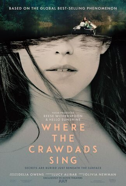

Where The Crawdads Sings
By Delia Owens
"Where the Crawdads Sing" is a novel written by Delia Owens. The book tells the story of Kya, a young girl
who is abandoned by her family in the marshlands of North Carolina during the 1950s. The novel explores
Kya's journey from childhood to adulthood as she struggles to survive on her own in the marsh, learning
about the natural world around her and finding solace in its beauty. The story also revolves around a murder
mystery that takes place in the small town where Kya lives, and Kya's own relationship with two young men
from the town. The book is a poignant exploration of loneliness, resilience, and the healing power of
nature.